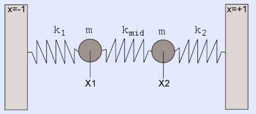
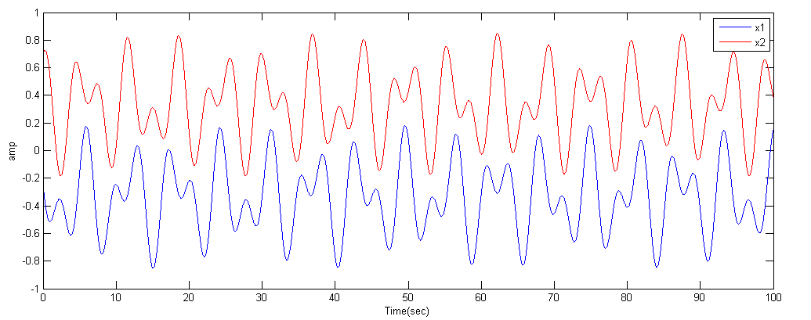
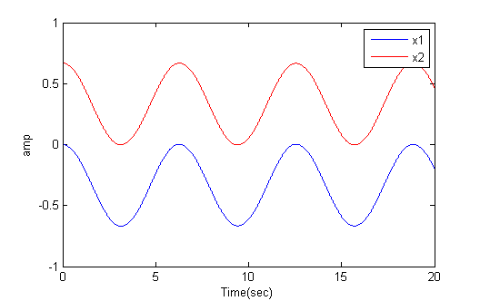
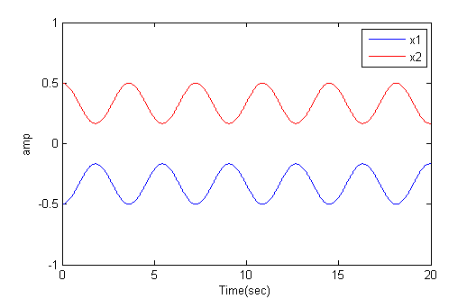

For this exercise, you will simulate an analog system using a Digital Differential Analyzer (DDA) and control the function of the circuit with a NiosII cpu. The positions of the two particles will be plotted as a function of time on the VGA display. You can consider the DDA as a special purpose, reconfigurable, calculator controlled by the NioII.
Procedure:
Read the DDA page. After reading the page introduction, the example code that you want to use is at the end of the page.
The physical system you will simulate is the coupled, spring-mass system shown below.
The image is modified from a paper by Alex Gagen and Sean Larson.

The differential equations for this system are:
m(d2x1/dt2) + k1(x1) − kmid(x2 − x1) + D1(dx1/dt) = 0
m(d2x2/dt2) - k2(x2) + kmid(x2 − x1) + D2(dx2/dt) = 0
The k's are spring constants, m the mass, and D's the damping coefficients. The outputs are x1 and x2 which will depend on position and velocity initial condtions, as well as the equation constants.
A matlab code and function provides a reference solution, to which you will compare your solutions. The image below is a typical output from the matlab program.
Note that the matlab code includes cubic force terms for the springs:
spring_force1 = k1 * ((x(1)-left_wall) + k13*(x(1)-left_wall)^3)
You will have to add one such term (k13) in the assignment below.

But in general the solutions are linear combinations of symmetric and antisymmetric solutions. The anti-symmetric solution corresponds to masses moving in exactly the same directions at all times, so that the center spring stays at its rest length, R. If the two outer springs have equal k and rest length L, then at rest, k*L=kmid*R and 2*L+R=2. For example, if kmid=k then the distance betweent the two masses can stay at separation 0.67 indefinitely (first image below). If the two masses are started at symmetric positions (relative to zero), then they move in opposite directions at all times (second image).


The previous matlab program uses the high performance ode45 solver. On the FPGA you are going to be using simple Euler integration.
This matlab program is coded to use Euler integration so that you can directly compare the the FPGA solution. The undamped solution is unstable, so a little damping is added.
-- NiosII See also:
There are now three different versions of Quartus used in the lab.
You may need to search the Altera site for the tutorial corresponding to the version you decide to use.
--Setting up Altera Monitor System
control panel>system>advanced>environment variables and add a variable with name QUARTUS_ROOTDIR and value c:\altera\11.0\quartus.program with device driver support.Using cable "USB-Blaster [USB-0]", device 1, instance 0x00 Pausing target processor: not responding. Resetting and trying again: FAILED Leaving target processor paused>Then some suspects come to mind:
altpll has changed between release 7 and 8 of Quartus. When defining a PLL for the phase-shifted SDRAM clock c0 (as explained in the SDRAM tutorial), you need to add an c1 output to the PLL with zero phase-shift and use this signal for the NiosII clock! If you don't do this, the program will load normally, with no error messages, but the program will not run! A new, corrected project is zipped here.reset=~KEY[0] will kill the processor! Whereas using reset=KEY[0] is fine.--Using QuartusII SignalTap tool to verify your design.
From the Altera Tutorial: The SignalTap II Embedded Logic Analyzer is a system-level debugging tool that captures and displays signals in circuits designed
for implementation in Altera’s FPGAs. SignalTap II can be used to capture and display signals in real time in any FPGA design (some M4K blocks are used).
You can:
Example from 2016 by Tahmid Mahbub, Manish Patel, Matt Filipek
(+/-1).(+/-1).m=1 .
Be prepared to demo your design to your TA in lab. You will be expected to show:
-- Set arbitrrary initial conditions and all three spring constants
--
Symmetric and antisymmetric modes with and without the cubic spring term.
Your written lab report should include: